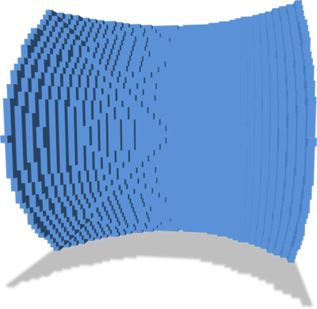
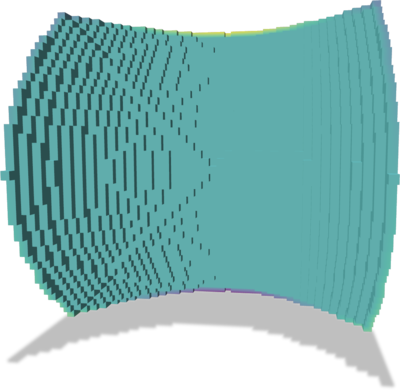
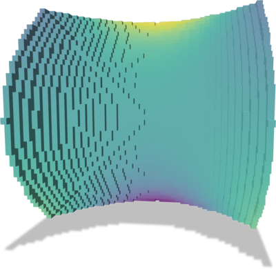

- Generated on Wed Jun 5 2024 18:11:14 for DGtal by
 1.11.0
1.11.0
|
DGtal 1.4.beta
|
Part of package DEC package.
In this documentation page, we detail a laplacian operator computations on surface mesh equipped with faces normals.
BUILD_POLYSCOPE_EXAMPLES variable (e.g. cmake .. -DBUILD_POLYSCOPE_EXAMPLES=ON).CMAKE_BUILD_TYPE variable) for high performance on large geometrical objects.We aim at solving a problem of the form \(\Delta u = f\). We follows the Finite Element Method to derive two matrices \(L, M\) such that \(L \mathbf{u} = M \mathbf{f}\). We use a normal based metric to make our operator work on digital surfaces.
The metric used is \( G = \begin{bmatrix} 1 - (\mathbf{u}_x)^2 & -\mathbf{u}_x \mathbf{u}_y \\ -\mathbf{u}_x \mathbf{u}_y & 1-(\mathbf{u}_y)^2 \end{bmatrix} \)
Where \(\mathbf{u} = (\mathbf{u}_x, \mathbf{u}_y, \mathbf{u}_z)\) is the provided normal for a surfel in the natural coordinate surface of the surfel.
Let us consider a single square face example. Using
we obtain a SurfaceMesh instance with a unique face, we add the naturally defined normal to it and we define its associated NormalCorrectedFEM object.
Let us add a scalar function on vertices. For instance, using Eigen syntax, we can use;
The expression for the integral of the product of two functions \(f\) and \(g\) inside a surfel is given by the following expression :
\[ \int_{\square} \sqrt{det(G)}fg \]
The expression for the integral of the dot product of the gradient of two functions \(f\) and \(g\) inside a surfel is given by the following expression :
\[ \int_{\square} \sqrt{det(G)} \nabla f^T G^{-1} \nabla g \rangle \]
By evaluating this expression with a linear basis, we can build matrices letting us evaluate these integrals for any two linear functions inside a face. The results can be obtained in the following way :
| Operator | Output | Description |
|---|---|---|
calculus.localM0(f) | \( n_v\times n_v\) | mass matrix (corresponds to the inner product between 0 forms in [44]) |
calculus.localL0(f) | \( n_v \times n_v\) | stiffness matrix (corresponds to Laplace-Beltrami operator in [44]), the matrix is PSD |
Given a scalar function defined on a generic surface mesh vertices, all previously mentioned operators can be applied to obtain consistent quantities on the overall mesh.
| Operator | Output | Description |
|---|---|---|
calculus.M0() | \( n_v \times n_v\) | global mass matrix (PD) |
calculus.lumpedM0() | \( n_v \times n_v\) | global lumped mass matrix (Diagonal, positive) |
calculus.L0() | \( n_v \times n_v\) | global stiffness matrix (SPD) |
Let suppose we want to solve the following Laplace problem for data interpolation:
\begin{eqnarray*} \Delta_\Omega u& = 0 \\ & s.t. u = g \text{ on } \partial\Omega \end{eqnarray*}
We want to solve that problem on a digital surface \(\Omega\) with a boundary and some scalar values attached to boundary vertices, or sampled on the object surface.
Furthermore, the discrete version of the Laplace problem boils down to a simple linear problem using on the discrete Laplace-Beltrami sparse matrix.
We also use class DirichletConditions to enforce Dirichlet boundary conditions on the system.
The overall code is:
Leading to the following results (see dgtalFEM-poisson.cpp):
| Surface | Boundary condition \( g\) | Solution \( u \) |
|---|---|---|

|

|

|